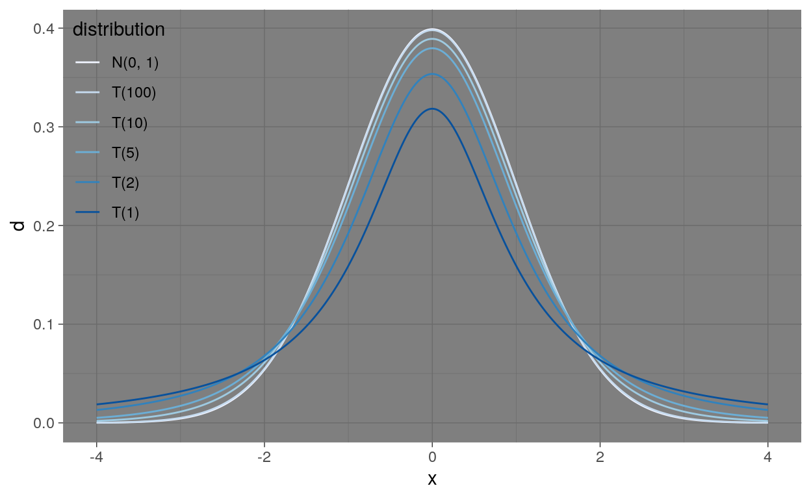
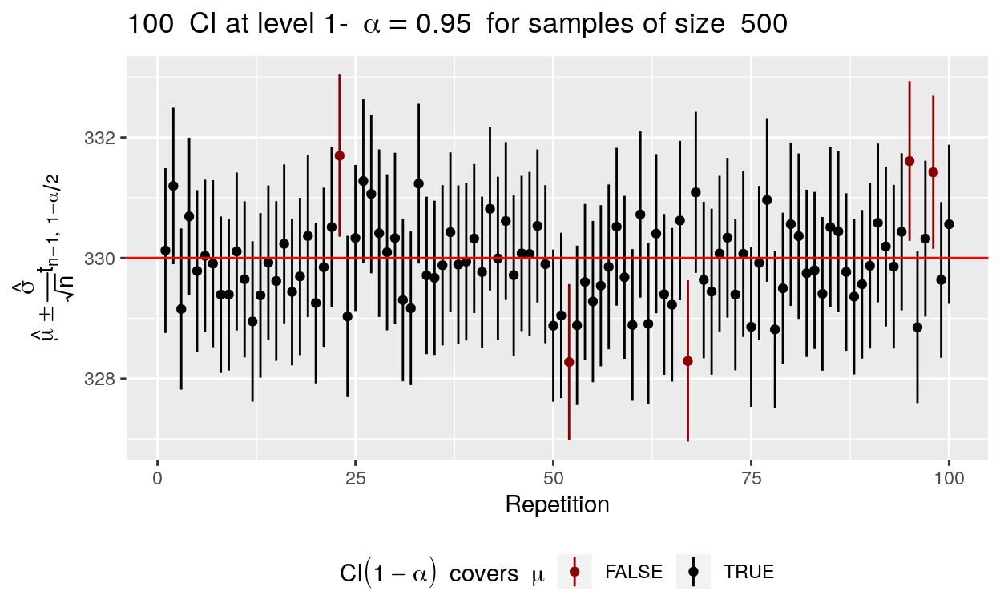

In this case study, you will investigate the properties of sampling using soda cans as an examples. The goal is to estimate the container capacity (advertised to be 330 mL) of a can, noted \(\mu\). To do so, we have access to a container filled 1,000,000 cans (stored as can_container). Each element of can_container is the capacity of a different can.
We could get a very good estimate \(\hat{\mu}\) of \(\mu\) by measuring the capacity of all cans (\(\Leftrightarrow\) accessing all values of can_container). Unfortunately, opening a can to measure its capacity means we can’t sell it anymore…
We’ll thus get a feeling of the sample size (usually called \(n\)) required to get a good estimate: hopefully, \(n \ll 1,000,000\).
In this study, we’ll use a very simple estimator, introduced in Tristan’s slides: the sample average (which turns out to also be the Maximum Likelihood estimator in this problem).
To be a bit a formal, let \(Y\) be the capacity of a can and \(Y_1, \dots, Y_n\) a random sample of size \(n\) (obtained here from Simple Random Sampling) of capacities. You can create \(Y_1, \dots, Y_n\) by picking \(n\) cans at random from the container and measuring their capacity. We are interested in the average capacity \(\mu = E[Y]\) and will estimate \(\mu\) using the estimator \(\bar{Y} = \frac{1}{n} \sum_{1}^n Y_i\) to get the corresponding estimate \(\hat{\mu} = \bar{y} = \frac{1}{n} \sum_{1}^n y_i\)
Write a function compute_estimate that create a sample \((y_1, \dots, y_n)\) and computes the corresponding estimate.
compute_estimate <- function(n) {
can_sample <- ### complete here
estimate <- ### complete here
return(estimate)
}"Use the functions `sample()` and `mean()`"compute_estimate <- function(n) {
can_sample <- sample(x = can_container, size = n, replace = FALSE)
estimate <- mean(can_sample)
return(estimate)
}Use your function to get estimates \(\hat{\mu}\) of \(\mu\) for various sample sizes (ranging from \(n = 10\) to \(n = 10000\)). Get more than one estimate for each sample size.
compute_estimate <- function(n) {
can_sample <- sample(x = can_container, size = n, replace = FALSE)
estimate <- mean(can_sample)
return(estimate)
}compute_estimate(n = 10)replicate(7, compute_estimate(n = 10)) ## call compute_estimate(10) 7 times
replicate(7, compute_estimate(n = 100)) ## call compute_estimate(100) 7 times
replicate(7, compute_estimate(n = 1000)) ## call compute_estimate(1000) 7 timesWe just illustrated something you’ve seen in class, the estimate depends on the sample. Since compute_estimate creates a new sample each times it’s called, it will never (or only rarely) produce exactly the same estimate.
Our estimator \(\bar{Y}\) is a random variable, if we had access to its distribution we could compute its bias and and variance. Here we don’t know (yet) the exact distribution of \(\bar{Y}\) yet. We’re thus going to look only at its distribution instead by creating many estimates (say 100, numbered from 1 to 100) for each sample size in \(\{10, 50, 100, 500, 1000, 5000\}\).
We first create a tibble with all combination and then compute an estimate with our function compute_estimate for each combination. The syntax is a bit involved but don’t worry too much about it as it’s not the main purpose.
estimates_data <- crossing(sample_size = c(10, 50, 100, 500, 1000, 5000),
estimate_number = 1:100) %>%
mutate(estimate_value = map_dbl(sample_size, compute_estimate))
estimates_data## # A tibble: 600 x 3
## sample_size estimate_number estimate_value
## <dbl> <int> <dbl>
## 1 10 1 328.
## 2 10 2 331.
## 3 10 3 326.
## 4 10 4 334.
## 5 10 5 337.
## 6 10 6 330.
## 7 10 7 333.
## 8 10 8 332.
## 9 10 9 333.
## 10 10 10 332.
## # … with 590 more rowsWe just created 100 estimates for each of the 6 sample sizes considered.
You’re now going to explore the distribution of those estimates. Use ggplot to explore the distribution of the data, make sure to separate the estimates by sample size.
ggplot(estimates_data, ...)"Use `geom_density()` or `geom_histogram()` and `facet_wrap()`"ggplot(estimates_data, aes(x = estimate_value)) +
geom_histogram(binwidth = 0.5) +
geom_vline(xintercept = 330, color = "red") + ## advertised capacity
facet_wrap(~sample_size) + ## separate the data by sample_size
labs(x = "Estimate", y = "Density") ## Nice labelsThe previous graph illustrates a very general result in statistics: the larger the sample, the more accurate the estimate. There are of course exceptions (especially if the estimator is biased) but as a good rule of thumbs, more is better. Let’s characterize the distribution of the estimates for each class size.
Compute the minimium, maximum, average and standard deviation of the estimate values for each sample size.
estimates_data %>% ..."Use `group_by()` and `summarize()`"estimates_summary <- estimates_data %>%
group_by(sample_size) %>%
summarize(estimate_sd = sd(estimate_value),
estimate_mean = mean(estimate_value),
estimate_min = min(estimate_value),
estimate_max = max(estimate_value))
estimates_summary"Good job! Note that the range and standard deviation of the estimate values decrease with sample size."The previous graphs and tables tell us that:
Indeed when using only 10 cans to assess the capacity, the estimate \(\hat{\mu}\) can be anywhere between 320 and 340 whereas it is very concentrated around 330 when 5000 cans.
Using the previous results, find a scaling relation between estimate_sd and sample_size
estimates_summary <- estimates_data %>%
group_by(sample_size) %>%
summarize(estimate_sd = sd(estimate_value),
estimate_mean = mean(estimate_value),
estimate_min = min(estimate_value),
estimate_max = max(estimate_value))"Try a scatter plot of `estimate_sd` against `sample_size`""Maybe on a log scale"ggplot(estimates_summary, aes(x = log(sample_size), y = log(estimate_sd))) +
geom_point()To go further and compute the bias and variance of our estimate, we need to know the theoretical distribution of our estimate.
Assume that the can capacitites are independant and follow a normal distribution \(\mathcal{N}(\mu, \sigma^2)\) with mean \(\mu\) and variance \(\sigma^2\).
The theory informs us that
\[ \bar{Y} = \frac{1}{n} \sum_{1}^n Y_i \sim \mathcal{N}\left(\mu, \frac{\sigma^2}{n}\right) \]
In particular, \(E[\bar{Y}] = \mu\) and \(V[\bar{Y}] = \frac{\sigma^2}{n}\).
As \(n\) increases, the variance of \(\bar{Y}\) decreases as \(\frac{1}{n}\) and thus is standard deviation as \(\frac{1}{\sqrt{n}}\). This is in line with our findings from the previous section.
The formula also tells us that \(\bar{Y} \to \mu\) when \(n \to \infty\).
We’re going to investigate this convergence by looking at estimates computed on increasingly large samples: the first 10 cans, the first 11 cans, etc.
Write a function to compute the capacity estimate from the first \(n\) cans in can_container (and not from a random sample):
compute_estimate_2 <- function(n) {
estimate <- ### complete here
return(estimate)
}compute_estimate_2 <- function(n) {
estimate <- mean(can_container[1:n])
return(estimate)
}You can then look at the evolution of the estimate when you increase the sample size from \(n = 1\) to \(n = 50,000\) (there is no real point looking at larger sample sizes).
compute_estimate_2 <- function(n) {
estimate <- mean(can_container[1:n])
return(estimate)
}estimates_convergence <- tibble(sample_size = seq(from = 10, to = 50000, by = 1)) %>%
mutate(estimate_value = map_dbl(sample_size, compute_estimate_2))
estimates_convergence## # A tibble: 49,991 x 2
## sample_size estimate_value
## <dbl> <dbl>
## 1 10 338.
## 2 11 339.
## 3 12 341.
## 4 13 339.
## 5 14 338.
## 6 15 337.
## 7 16 337.
## 8 17 337.
## 9 18 334.
## 10 19 332.
## # … with 49,981 more rowsAnd plot the convergence of \(\hat{\mu}\) to \(\mu\) as a \(n \to \infty\).
ggplot(...)ggplot(estimates_convergence, aes(x = sample_size, y = estimate_value)) +
geom_line() +
geom_hline(yintercept = 330, color = "red")In this section, we’ll illustrate a few properties of confidence intervals.
Assume for now that \(\sigma^2\) is knonw. We learned in the previous section that \(\bar{Y} \sim \mathcal{N}(\mu, \frac{\sigma^2}{n})\) or equivalently that the pivotal statistic \[ Z = \frac{\bar{Y} -\mu}{\sigma/\sqrt{n}} \sim \mathcal{N}(0, 1) \]
In particular, the distribution of \(Z\) depends on neither \(\mu\) nor \(\sigma\) and can be used to construct confidence intervals (see Tristan’s slides for details).
In that simple case, to compute a confidence interval at level \(1 - \alpha\), we simply need to find \(a\) and \(b\) such that \[ P(a \leq Z \leq b) = 1 - \alpha \]
You’ve seen in class that the optimal solution was:
where \(q_\beta\) is the quantile or order \(\beta\) of the normal distribution, computed with the function qnorm().
In fact, for every \(\beta \leq \alpha\) we could set \(a = q_{\beta}\) and \(b = q_{1 - \alpha + \beta}\) to obtain a solution as: \[ P(a \leq Z \leq b) = P(Z \leq q_{1 - \alpha + \beta}) - P(Z \leq q_{\beta}) = (1 - \alpha + \beta) - \beta = 1 - \alpha \] The condition \(\beta \leq \alpha\) ensures that \(1 - \alpha + \beta \leq 1\) and that the corresponding quantile is properly defined and the *optimalù choice corresponds to \(\beta = \alpha/2\).
But why is it optimal? The function plot_norm_interval() helps you visualize the interval \([q_{\beta}, q_{1 - \alpha + \beta}]\) for different values of \(\beta\).
plot_norm_interval(beta = 0.025, alpha = 0.05)In the previous section, the pivotal statistic \(Z\) depends on \(\sigma\) being known, but \(\sigma\) is usually unknown in practice…
We can replace it with the classical estimator \(S^2 = \frac{1}{n-1}\sum_{i=1}^{n}(Y_i - \bar{Y})^2\) and plug it in the definition of \(Z\) to obtain a new statistic. \[ T = \frac{\bar{Y} - \mu}{S / \sqrt{n}} \]
But is it still a pivotal statistic? The surprising answer is yes. \[ \begin{align} T & = \frac{\bar{Y} - \mu}{S / \sqrt{n}} = \frac{\bar{Y} - \mu}{\sigma / \sqrt{n}} \times \frac{\sigma}{S} \\ & = \underbrace{\frac{\bar{Y} - \mu}{\sigma / \sqrt{n}}}_{\sim \mathcal{N}(0, 1)} \times \left( \frac{1}{n-1}\underbrace{\frac{\sum_{i=1}^n (Y_i - \bar{Y})^2}{\sigma^2}}_{\sim \chi^2(n-1)} \right)^{-1/2} \sim \frac{\mathcal{N}(0, 1)}{\sqrt{\frac{\chi^2(n-1)}{n-1}}} \sim \mathcal{T}(n-1) \end{align} \]
Thanks to the properties of independent \(\chi^2\) and gaussian variables (we’ve not properly shown that \(S\) and \((\bar{Y} - \mu)/\sigma\) are independent, you’ll have to trust me on that one), our statistic is pivotal and follows a Student’s t-distribution with \(n-1\) degrees of freedom.
Let’s compare the \(\mathcal{N}(0, 1)\) and \(\mathcal{T}(n-1)\) distributions for various values of \(n\).

The quantile of Student’s t distribution are computed with qt(). It works like qnorm() but requires an extra parameter df (degree of freedom).
"Use qt()"qt(p = 0.975, df = 2)"Well done! You now have the knowledge required to compute confidence intervals. Note the quantile for $\\mathcal{T}(2)$ is 4.30, more than twice as high as the same quantile for $\\mathcal{N}(0, 1)$ and will result in much wider confidence intervals. In the previous section, we learned how to replace \(\sigma^2\) with its estimator to obtain a pivotal statistics. If we note \(t_{n, \beta}\) the quantile of order \(\beta\) of \(\mathcal{T}(n)\). We can build a confidence interval of level \(1-\alpha\) for \(\mu\) as follows:
\[ \begin{align} & P\left(t_{n-1, \alpha/2} \leq T \leq t_{n-1, 1 - \alpha/2} \right) = 1 - \alpha \\ \Rightarrow & P\left(t_{n-1, \alpha/2} \leq \frac{\bar{Y} - \mu}{S/\sqrt{n}} \leq t_{n-1, 1 - \alpha/2} \right) = 1 - \alpha \\ \Rightarrow & P\left( \frac{S}{\sqrt{n}}t_{n-1, \alpha/2} \leq \bar{Y} - \mu \leq \frac{S}{\sqrt{n}} t_{n-1, 1 - \alpha/2} \right) = 1 - \alpha \\ \Rightarrow & P\left( \frac{S}{\sqrt{n}}t_{n-1, \alpha/2} - \bar{Y} \leq -\mu \leq \frac{S}{\sqrt{n}} t_{n-1, 1 - \alpha/2} - \bar{Y} \right) = 1 - \alpha \\ \Rightarrow & P\left( \frac{S}{\sqrt{n}}t_{n-1, 1 - \alpha/2} + \bar{Y} \leq \mu \leq - \frac{S}{\sqrt{n}} t_{n-1, \alpha/2} + \bar{Y} \right) = 1 - \alpha \\ \end{align} \] Since \(\mathcal{T}(n-1)\) has a symmetric distribution, \(t_{n-1, \frac{\alpha}{2}} = - t_{n-1, 1 - \frac{\alpha}{2}}\) and the previous equality is often written \[ P\left( \mu \in \left[ \bar{Y} \pm \frac{S}{\sqrt{n}} t_{n-1, 1 - \frac{\alpha}{2}} \right] \right) = 1 - \alpha \]
Consider the sample of the first \(1000\) cans: can_sample <- can_container[1:1000]. Build a 95% confidence interval of the can capacity for that sample.
can_sample <- can_container[1:1000]"Start with an estimate $\\hat{\\mu}$ of $\\mu$ and $\\hat{\\sigma}$ of $\\sigma$"can_sample <- can_container[1:1000]
mu <- mean(can_sample)
sigma <- sd(can_sample)
t_alpha2 <- qt(0.975, df = 999)can_sample <- can_container[1:1000]
mu <- mean(can_sample)
sigma <- sd(can_sample)
t_alpha2 <- qt(0.975, df = 999)
## lower bound
mu - sigma * t_alpha2 / sqrt(1000)
## upper bound
mu + sigma * t_alpha2 / sqrt(1000)Confidence interval are a bit tricky to understand:
Therefore, when replacing \(\bar{Y}\) and \(S\) with \(\hat{\mu}\) and \(\hat{\sigma}\) to compute the confidence interval, \(\mu\) is either inside \(\left[ \hat{\mu} \pm \frac{\hat{\sigma}}{\sqrt{n}} t_{n-1, 1 - \frac{\alpha}{2}} \right]\) or outside. The proper way to understand confidence intervals is to remember that \(IC(1-\alpha)\) covers \(\mu\) with probability 1-\(\alpha\). Stated differently, on average a fraction \(1 - \alpha\) of the confidence intervals you compute will contain the real value \(\mu\).
Let’s illustrate that with 100 estimates \(\hat{\mu}\) of \(\mu\) and the corresponding confidence interval of level 0.95. Each estimate \(\hat{\mu}\) is a point, each confidence interval is a linerange, the true value of \(\mu\) is indicated by the red line and the confidence intervals are colored in black if they cover the true value and in red if they don’t. In this (perfect) example, 5% of the 95% CI do not cover \(\mu\).

plot_ci() (used for the previous graph) allows you to compute and plot n_estimates intervals of confidence level 1 - alpha from samples of size sample_size (\(n\)). Use it to explore the relation between \(n\), \(\alpha\), the length of \(CI(1-\alpha)\) and the probability that it covers \(\mu\).
plot_ci(n_estimates = 200, sample_size = 500, alpha = 0.05)